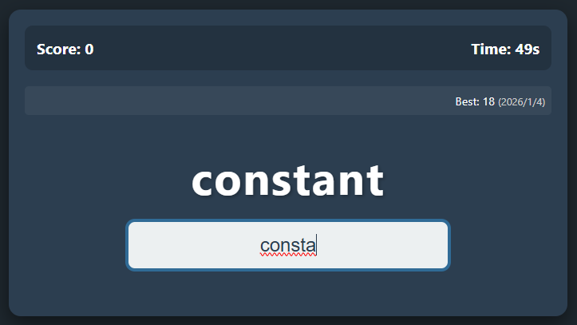

My Web Apps Portfolio
学習中に作成したWebアプリケーションのポートフォリオです。
以下のボタンから各アプリを実際に起動できます。
📝 ローカル保存型タスク管理アプリ

HTML/CSS/JavaScript(ES6)で作成した、モダンなデザインのTo-Doリストアプリです。
ブラウザのLocalStorage機能を使用しているため、ページを閉じたりリロードしてもデータが消えません。
- タスクの追加・削除機能
- 完了状態の切り替え（取り消し線）
- 追加日時の自動記録
- レスポンシブデザイン（スマホ対応）
🌍 多機能・天気予報アプリ

Open-Meteo APIと連携し、リアルタイムな気象情報を取得するアプリケーションです。
非同期処理（Async/Await）を活用し、スムーズな操作性を実現しました。
- 現在地取得 (GPS): ワンタップで今いる場所の天気を表示
- 世界都市検索: ジオコーディングAPIにより、詳細な住所や海外都市も検索可能
- 詳細予報: 現在の天気、24時間予報(降水確率付)、14日間予報
- UI設計: 横スクロールやグリッドレイアウトを活用した見やすいデザイン
⌨️ Speed Typing Game (タイピングゲーム)

JavaScriptのイベント処理とDOM操作を学習するために作成した、制限時間付きのタイピングゲームです。
外部ライブラリを使わず、標準機能（Web Audio API）だけで効果音を生成しているのが特徴です。
- 即時判定ロジック: キー入力と同時に正誤を判定し、Enterキーで確定
- 効果音生成: 正解・不正解の音をブラウザ内で動的に合成
- ハイスコア保存: LocalStorageを使い、ブラウザを閉じても自己ベストを記録
- 集中できるUI: 視線移動を最小限に抑えたコンパクトなカード型デザイン